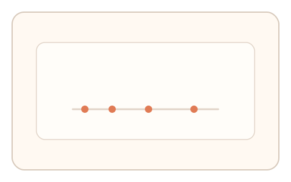
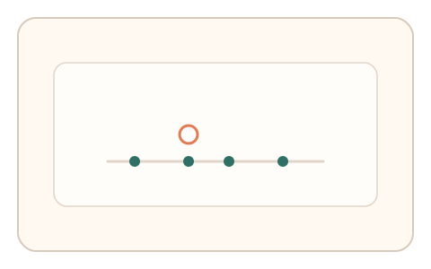
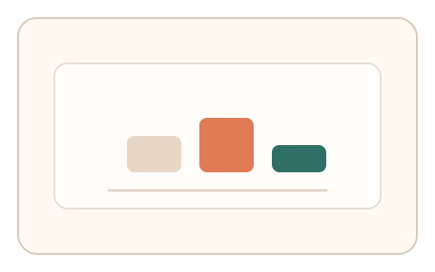

#145
F：意图/现实耦合 × 异步/随机插入（路径/预测误差）
已扩展
交互节奏指纹
记录用户自然交互节奏并随机要求复刻，比较节奏分布与历史基线。
概念原文
系统先记录用户自然交互节奏，随机插入任务要求“复刻节奏”，系统与个体历史基线比对。
利用个人节奏习惯作为难以伪造的签名。
研究背景
个体节奏习惯与时序控制具有稳定性。通过记录自然交互节奏，再要求复刻，可形成难以伪造的节奏指纹。
核心机制
- 采集一段自然交互节奏作为基线。
- 随机插入复刻节奏任务。
- 记录复刻时的间隔序列。
- 与个体历史基线比对。
用户流程
- 步骤 1：用户完成常规操作并记录节奏。
- 步骤 2：系统提示复刻刚才的节奏。
- 步骤 3：系统比较节奏分布与漂移。
判定信号
间隔序列分布
节奏的间隔分布具有个体差异。
复刻漂移与微抖动
真实复刻会出现轻微漂移与波动。
判定逻辑
复刻节奏需与基线相似且存在自然波动；过度一致或随机判异常。
对抗面
- 记录节奏后直接回放
- 脚本生成固定间隔
防御与缓解
- 随机化复刻时机与段长
- 交错不同节拍与任务
- 叠加反应时与轨迹信号
可达性与风险
提供更慢节奏与键盘点击替代。
- 长时间节奏任务导致疲劳
- 设备延迟影响节奏准确度
可视化状态

状态 1：节奏采集
记录自然交互间隔。

状态 2：复刻节奏
提示用户复刻节奏。

状态 3：指纹比对
比较节奏分布与漂移。
参考资料
Sensorimotor synchronization
说明节拍同步与时序控制。
Time perception
说明时间感知与节奏偏差。